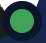
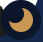
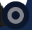
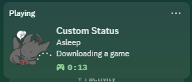
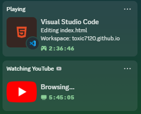
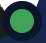
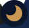
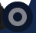
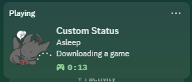
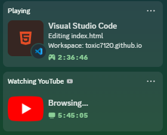

Here's what my status on  means!
means!
Online

Well... quite self explanatory. I'm Online! Please reach out if you wish!
Do Not Disturb
I only turn this on because I don't want to be distracted while doing my work. Try to reach out!, but do expect a delay in a reply.
Idle

Only happens when I'm AFK for far too long. Please wait for me to come back, and I'll gladly look at your message!
Offline

You know what this means! I'll reach back to you when I get back online!
Extras
This is for the times when you would see "Playing Custom Status" (as shown below)

This would only happen when I would wish to keep my laptop open but I myself need to go to sleep. (or sometimes, just me using it as a way to say that I'm busy)
There are other's that are pretty self explanatory, it shows what I'm doing and for how long (just like any other rich presence)


Well... quite self explanatory. I'm Online! Please reach out if you wish!
I only turn this on because I don't want to be distracted while doing my work. Try to reach out!, but do expect a delay in a reply.

Only happens when I'm AFK for far too long. Please wait for me to come back, and I'll gladly look at your message!

You know what this means! I'll reach back to you when I get back online!
This is for the times when you would see "Playing Custom Status" (as shown below)

This would only happen when I would wish to keep my laptop open but I myself need to go to sleep. (or sometimes, just me using it as a way to say that I'm busy)
There are other's that are pretty self explanatory, it shows what I'm doing and for how long (just like any other rich presence)

This website is still in production, Somethings may or may not work. Not recommened on Mobile